Country Happiness Report¶
Why are people in certain countries happier than others?¶
Abstract¶
- When quantifying the happiness ofWhen quantifying the happiness of particular countries, a scale called the Cantril ladder is used. When using this ladder, surveyors ask respondents to rate their country on a scale from zero to ten. Zero is the least happy while ten is the happiest (World Happiness Report). The survey responses are averaged to find the country’s overall happiness score. Countries ranged in happiness score from 7.537 (Norway) to 2.693 (Central African Republic). The data used in this project is country data compiled by the United States government in 2010 posted on the CIA World Factbook. The data includes twenty-five variables for each country: particular countries, a scale called the Cantril ladder is used. When using this ladder, surveyors ask respondents to rate their country on a scale from zero to ten. Zero is the least happy while ten is the happiest (worldhappiness). From the survey responses, they are averaged to find the country’s overall happiness score. Countries ranged in happiness score from 7.537 (Norway) to 2.693 (Central African Republic). The data used in this project is country data compiled by the United States government in 2010 posted on the CIA World Factbook. The data includes twenty-five variables for each country:
- happiness score
- state of development
- average elevation in meters
- average rainfall in millimeters
- average temperatures in degrees Celsius
- expected number of years schooling per person
- average body mass index per person
- money per capita spent on health adjusted of purchasing power parity in U.S. dollars
- alcohol consumption in liters per capita
- average life expectancy per person
- average amount of children per family
- number of deaths per 1000 people
- number of births per 1000 people
- percentage of land used for agriculture
- cell phone subscribers per 1000 people
- percentage of literate people
- number of infant deaths per 1000 births
- number of immigrants per 1000 people
- coastline to total area in square miles ratio multiplied by 1000
- total coastline length in miles
- number of terrorist attacks in the past five years within the country
- total population
- total area in square miles
- number of people per square mile
- gross domestic product per capita
The countries were separated three different ways: happiness score, development, and similar countries. All 148 countries were split into happiness tiers. The happiest 37 countries earned tier one status, followed by the next three groups of 37. Another way the countries were split up was by development status. The United Nations Development Programme categorizes countries into four categories: very high development, high development, low development, and very low development. Lastly, the outlying countries were also compared to other countries within half a standard deviation above or below the variable in use. This is what is meant by the term “similar rating” in this paper. The five outlying countries were discovered when the countries were split into their development categories. The countries that are either too happy or too sad compared to the other countries of their development status are considered outliers. The five outlying countries are Guatemala, Nicaragua, El Salvador, Bolivia, and the Philippines. All five outliers are too happy compared to countries of the same development status.

Figure 1: The outlying countries are happier than the other countries with the same development status.
Significant Variables¶
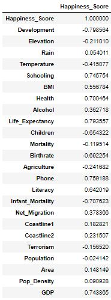Figure 2: Development, schooling, health, life expectancy, phone, infant mortality, and gross domestic product (GDP) per capita are considered to be significant because r > 0.7 or r < -0.7.
When testing for a correlation to a country’s happiness score, seven of the twenty-four variables were found to be significant: development, schooling, health, life expectancy, phone, infant mortality, and gross domestic product (GDP) per capita. Development quantifies the current state of development in a particular country by giving it a number of one through four with one being considered “very high development” and four being considered “very low development”. Schooling refers to the expected number of years a person spends on average in school. Health is measured by money spent per capita per year on health adjusted for purchasing power parity in U.S. dollars. Life expectancy is the average length of a person’s life. Phone is measured by the number of phones per one thousand people. Infant mortality displays the amount of deaths by infants per one thousand people. Lastly, GDP stands for gross domestic product per capita.
The Guatemala Case¶
Of all countries that are outliers, Guatemala is the most extreme. Its happiness score of 6.454 puts it in the top tier of happy countries. However, the seven variables correlated with happiness tell a different story. When compared to countries with a similar happiness rating, Guatemala is far less developed. It has fewer years of schooling, spends less than a sixth of the amount of money other countries spend on health, and has a life expectancy of roughly 5.5 years fewer. Guatemala has less than half of the number of phones per one thousand people, possesses an infant mortality rate of more than 2.5 times the other countries’ average, and has less than a fourth of the average GDP per capita. It was also tied for last in development level and last in years schooling and infant mortality with countries of similar happiness.
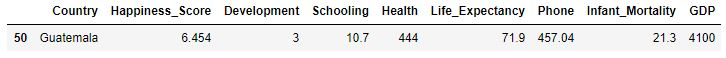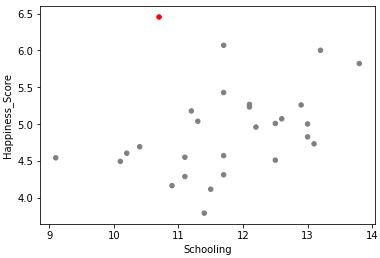Figure 3: Guatemala has a high happiness score and low schooling value when compared with other low developed countries.
The Nicaragua Case¶
Nicaragua is another country categorized as having low development, but has a happiness score comparable to countries of very high development. Nicaragua lacks profoundly in money spent on health, number of phones per one thousand people, and GDP per capita when compared to countries of similar happiness. These countries spend an average of $1760 on health per capita per year, while Nicaragua spends $275. Nicaragua also has less than a third of the number of phones per one thousand people and less than a fifth of the average GDP per capita. The country also is below average in terms of years schooling, life expectancy, and infant mortality. Despite these facts, Nicaragua remains happier than highly developed nations, such as Japan and South Korea.
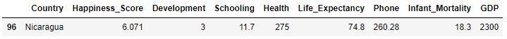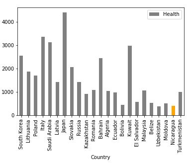Figure 4: When compared to countries of similar happiness scores, Nicaragua spends less money on health.
The El Salvador Case¶
El Salvador falls just outside of the top tier of happiness, but is near the top of the second highest tier and therefore it is considered a happy country. Overall, it is the forty-fourth happiest country in the world, but its development is considered “low”. As compared to Guatemala and Nicaragua, El Salvador is not as far off from countries of similar happiness in its metrics. However, it is still far enough away to be considered an outlier in terms of happiness. The country’s average years of schooling is 13.2 which is more than a year less than average. It spends less than a third of the average on health, has a life expectancy that is low by about 2.5 years, a number of phones that is just over half of the average, an infant mortality rate about 50% too high, and a GDP per capita that is less than half of the average. Regardless of these statistics, El Salvador ranks ahead of many highly developed countries.
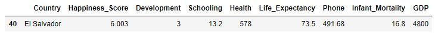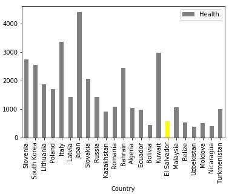Figure 5: El Salvador’s health spending is low when compared to similarly happy countries.
The Bolivia Case¶
The next outlier, Bolivia, is below the average of similar countries in every significant variable. Average expected years of schooling is only 0.4 below average, and life expectancy is only 4.2 years below average. However, the other variables are not even close to the average amount. The country spends less than a third of the amount of money on health as the similar countries do on average, has less than half of the number of phones per one thousand people, has an infant mortality of almost triple the average, and has roughly a fourth of the GDP per capita. Bolivia still ranks ahead of many of the wealthier and more developed countries of eastern Europe.
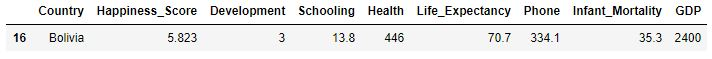
Figure 6: Bolivia is much happier than countries with similar infant mortality rates.
The Philippines Case¶
The last and most unique country that appears happier than its statistics is the Philippines. Of the five outliers, the Philippines is the least happy as it is just barely above the 50th percentile. The Philippines is also the only outlier to not be located in Central or South America or speak Spanish. When compared to countries of similar happiness, the Philippines has two less years of expected average schooling, spends slightly more than a fourth on health, has a life expectancy 5.2 years below average, a low number of phones per one thousand people, an above average infant mortality rate, and a GDP $3200 below average. Even though the Philippines is significantly less happy than the other outliers, it has a happiness rating higher than Hungary, Croatia, Greece, and Portugal, very highly developed European countries.
 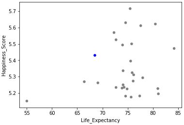
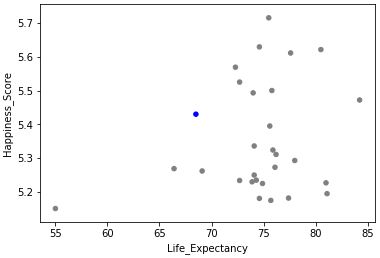Figure 7: The Philippines has a low life expectancy when compared to countries with similar happiness scores.
Top 5 Countries¶
The top five happiest countries in the world are Norway, Denmark, Iceland, Switzerland, and Finland. Unsurprisingly, these countries are well above average in every significant variable. They all are expected to go to school at least three years longer than average, spend at least 2.5 times more on health, have a life expectancy of nine years or longer, double the number of phones, an infant mortality rate close to zero, and GDPs per capita roughly triple the average or more. The variable that stands out the most is infant mortality. The mean for all the countries is 23.8 deaths per one thousand births while the median is fifteen deaths. Of the top five happiest countries, Denmark has the highest infant mortality rate at four deaths per one thousand births. GDP per capita has a large influence as well. When analyzing the data as a whole, six countries have outlying GDP per capita that is too high. Finland is the only top five country without an outlying GDP per capita, yet it is still well above average in terms of happiness.
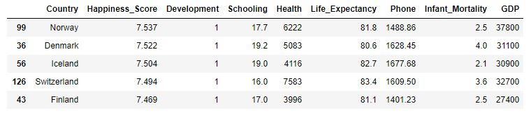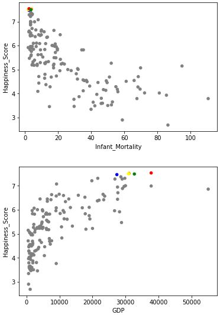Figures 8 and 9: Norway (red), Denmark (orange), Iceland (yellow), Switzerland (green), and Finland (blue), the happiest countries in the world, have high GDPs per capita and low infant mortality rates.
Bottom 5 Countries¶
The bottom five happiest countries in the world are Rwanda, Syria, Tanzania, Burundi, and the Central African Republic. These countries fall extremely below average in every category. The only exception is Syria, which has a better than average infant mortality rate. All of these countries go to school roughly 2.5 years less than average or shorter, spend a miniscule amount on health per person, have life expectancies at least 5.5 years shorter than average, a small number of phones, high infant mortality rates, and GDPs per capita that are one third of the average or less. The area in which these countries fall shortest is money spent on health. Of these five countries, Syria spends the most on health, but only spends $169 per person, roughly one ninth of the average. Tanzania and the Central African Republic each spend $32 per person, which is less than a 47th of the average. There are not as many outliers in the bottom five as compared to the top five, however, these countries rank consistently near the bottom in most categories.
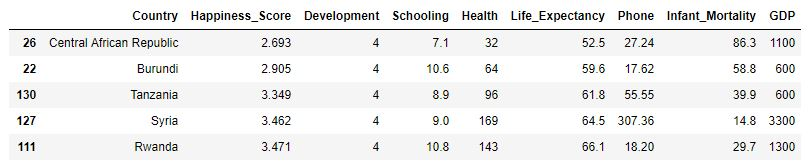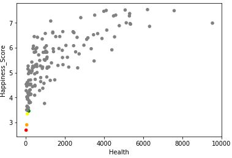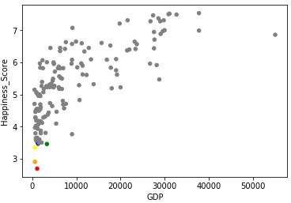Figures 10 and 11: Rwanda (red), Syria (orange), Tanzania (yellow), Burundi (green), and the Central African Republic (blue), the least happiest countries do not spend much money on health and have low GDPs per capita.
Four Attempts to Explain Outliers¶
Stress Creates Happiness? Not at All.¶
Unsurprisingly, the happiest countries in the world; Norway, Denmark, Iceland, Switzerland, and Finland all fall within the top eight least stressed countries in the world. Guatemala, El Salvador, Bolivia, and the Philippines all have similar levels of stress when compared to the other countries of the same development level. However, they are still happier than the rest of these countries. Stress has a strong correlation with country happiness and development. Because of this, stress cannot be used to determine why the outlying countries are happier than they should be.
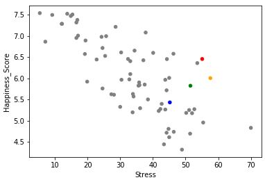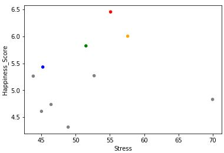Figures 12 and 13: Guatemala (red), Nicaragua (orange), Bolivia (green), and the Philippines (blue) have similar stress levels as other low developed countries. The variable has a strong correlation with all of the countries.
Fragility is Predictable¶
The Fragile States Index defines a fragile state as a country with a government that has little control over its territory, non-provision of public services, widespread corruption, large number of refugees, and economic decline (Fragile States Index). Countries considered more fragile receive a higher fragility score. Fragility has a strong correlation with happiness and development. Like many of the other variables, almost all of the five outlying countries scored better than the other countries of similar development. The Philippines is the only country that scored worse in this case. When compared to all of the countries in the dataset, the outliers are comparable to the other datapoints. Unsurprisingly, the more developed, happier countries are less fragile than the less developed, less happy countries. However, this variable does nothing to provide evidence as to why the outliers are too happy.
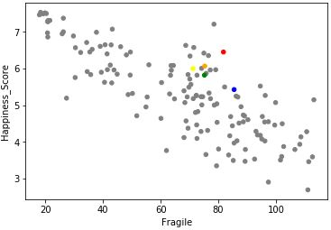Figure 14: Country fragility is correlated with happiness and does nothing to prove the outliers’ high happiness scores.
Divorce Rates Mean Nothing¶
The divorce variable is found by diving the crude divorce rate (divorces per 1000 people) by the crude marriage rate (marriages per 1000 people) (England and Kunz). The dataset displays no strong correlation between divorces and happiness. If anything, divorces may slightly increase with happiness, but not enough to confidently state that. Interestingly, Guatemala, Nicaragua, and El Salvador have the three highest divorce rates of the low developed countries with divorce data, but are the three happiest. However, the divorce data is seemingly so random that it can be considered a useless variable.
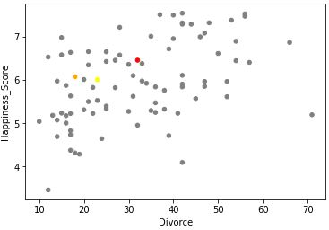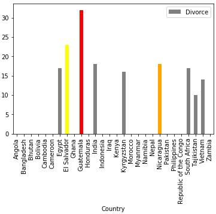Figure 15: Divorce rate is not correlated with happiness. If anything, divorce rate increases slightly with happiness.
Everyone Works the Same Amount¶
Some people have hypothesized that more time off work causes people to be happier (Murdock). This stems from more family time and time for leisurely activities. However, the data shows hours worked per week has zero correlation with happiness. All five outlying countries work at least one hour more than the 43 hour per week average of all the countries. Also, all countries except El Salvador, work more than the average low developed country. The theory that less work time leads to happiness or vice versa, as described in this case, cannot be stated. Too many countries work roughly the same number of hours to produce a correlation between average work time per week and country happiness. This is yet another empty variable.
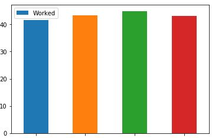Figure 16: Regardless of very high (blue), high (orange), low (green), or very low (red) development, the number of average hours worked per week does not fluctuate much.
How the Five Outliers Turn Struggle into Happiness¶
Facebook Makes Them Happy¶
The five outliers, Guatemala, Nicaragua, El Salvador, Bolivia, and the Philippines do not have the most resources, but they make the most of what they have. Due to a low level of development and high levels of poverty along with other shortcomings, these five countries possess every right to live an unhappy life. However, Latin Americans tend to live differently than other people of North America. Instead of prioritizing working toward the future, they focus more on the present. Also, they maintain close relationships to their family and friends (Haskins and Prescher). Each of these countries possess the basic necessities in order to live, in which they are grateful for (Al Jazeera). The Philippines fall into the same category, because they are generally grateful for the things they have and keep close relationships with family members and friends. One way these countries exhibit their friendships is through Facebook (Grogan). The percentage of Facebook users has a strong correlation with country happiness. Of the low developed countries, El Salvador, Bolivia, and the Philippines obtain the highest three percentages of Facebook users and a percentage above the mean of the highly developed countries. Guatemala and Nicaragua possess a fairly high percentage of Facebook users as well. This does not exactly prove that more Facebook means more happiness, but it does show an aspect of how these cultures value their friendships.
Faith Increases Happiness for the Countries that Need It¶
The five outlying countries use faith as a means to stay happy. In Latin American countries, it is common to use one’s faith as means to overcome daily struggles (Al Jazeera). This is also thought to be true in the Philippines as they attribute some of their happiness to faith (Chua and Lorenzo). All five outliers possess an interesting similarity, they all have a high population that identifies as Catholic: 43% of people in Guatemala, 45% in Nicaragua, 39% in El Salvador, 73% in Bolivia, and 81.4% in the Philippines. The data shows countries with very high development have no correlation to Catholicism. This makes sense because they do not necessarily need faith in order to be happy since they already excel in other areas. However, the low developed countries search for other ways of happiness, such as their faith. When compared to the other low developed countries, the five outliers have a much higher percentage of their population practicing Catholicism. This is not the sole reason these five low developed countries are happier, but it gives them a possible way to boost happiness. The plot of the very high developed countries shows no correlation because these countries are already happy and do not need religion to fall back on.
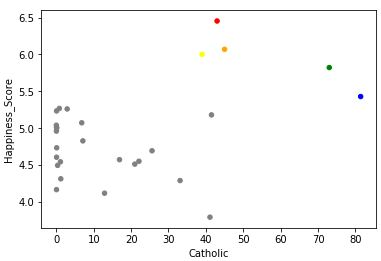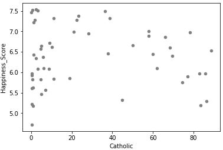Figures 18 and 19: The low developed countries with a higher percentage of Catholic population are also happier. There is no correlation with the very developed countries.
Low Developed Countries are Hopeful¶
People living in less developed countries tend to hold onto more hope in their economy than those living in highly developed nations. In order to measure economic hope, people in the surveyed countries were asked whether or not they believed the economy in their country would be better in 2018 than 2017 (Gallup). The net hope score was found by taking the percentage of optimists minus the percentage of pessimists. The reasoning for optimism towards the future stems from witnessing economic stability in other countries and slight economic improvement in their own. Much of this hope comes from young people. When they witness any sort of positive economic growth in their country, they begin to believe it will be much better in the future when they are making a living for themselves. Due to being content with their current lives as evident by high happiness ratings in the outlying countries, their worry about the future is relatively low. Because they are already happy living with just the basic necessities and close family ties, hope levels increase because they realize life can only get better.
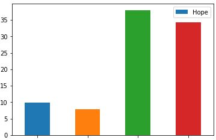Figure 20: The low and very low developed countries are much more hopeful than the high and very high developed countries.
Conclusion¶
The happiest countries in the world generally score well in the following categories: development, schooling, health, life expectancy, phone, infant mortality, and gross domestic product (GDP) per capita. It can be concluded that these variables cause happiness in countries to increase. The top five countries, Norway, Denmark, Iceland, Switzerland, and Finland, exemplify this by having exceptional rankings in each of these categories. The bottom five countries, Rwanda, Syria, Tanzania, Burundi, and the Central African Republic, do the same by scoring near the bottom in world in these variables. Low developed countries such as Guatemala, Nicaragua, El Salvador, Bolivia, and the Philippines, however, can still increase their happiness through other variables. For example, having more Facebook users allows these countries to add happiness. This may be because it gives them more connection to friends. Faith also allows these countries to be happier. The fact that the happiest countries have less of a connection to faith shows that faith is not essential for happiness because other factors may affect it more. However, it can add to happiness when other variables are not as present. Lastly, low developed countries tend to have more hope. This is true because people know there is room for improvement with many aspects of their country. Young people in these countries tend to have more hope because they know their country can improve over time, whereas high developed countries do not have as much room for improvement. Many other variables may exist that cause happiness to rise in specific countries. The data shows that some variables are key to obtaining a happy country, but countries can find other ways to become happy if they lack in one or many of these areas.
Paper Sources¶
- Al Jazeera. “Why Is Guatemala One of the World’s Happiest Countries?” GCC News | Al
- Jazeera, Al Jazeera, 30 July 2016, www.aljazeera.com/news/2016/07/guatemala-world-happiest-countries-160730204910287.html.
- Chua, Johannes L., and Mae Lorraine Rafols Lorenzo. “Why Pinoys Are Happy.” Manila
- Bulletin News, Manila Bulletin, 3 June 2018, news.mb.com.ph/2018/06/03/why-pinoys-are-happy/.
- England, J. Lynn, and Phillip R. Kunz. “The Application of Age-Specific Rates to
- Divorce.” Journal of Marriage and Family, vol. 37, no. 1, Feb. 1975, p. 40.
- Grogan, Mike. “Why Are Filipinos so Joyful?” Business Mirror, BusinessMirror, 23 Dec.
- 2016, businessmirror.com.ph/why-are-filipinos-so-joyful/.
- “Happiness, Hope, Economic Optimism.” Gallup-International.com, Gallup
- International, Dec. 2017, www.gallup-international.com/wp-content/uploads/2017/12/2017_Happiness_Hope_Economic-Optimism.pdf.
- Haskins, Suzan, and Dan Prescher. “Why Latin American Countries Are The Happiest.”
- The Huffington Post, The Huffington Post, 7 Dec. 2017, www.huffingtonpost.com/suzan-haskins-and-dan-prescher/latin-american-countries-happiest_b_7012544.html.
- Murdock, Kathy. “Could More Vacation Time Make Us Happier and More Productive?”
- All Business, Dun & Bradstreet, 11 Apr. 2011, www.allbusiness.com/could-more-vacation-time-make-us-happier-and-more-productive-15550913-1.html.
- “What Does State Fragility Mean?” Fragile States Index, The Fund for Peace, 2017,
- fundforpeace.org/fsi/frequently-asked-questions/what-does-state-fragility-mean/.
- World Happiness Report. “Frequently Asked Questions.” Frequently Asked Questions,
- World Happiness Report, 2018, worldhappiness.report/faq/.
Data Sources¶
- “Alcohol Consumption.” World Health Organization, World Health Organization, 2012,
- www.who.int/substance_abuse/publications/global_alcohol_report/msb_gsr_2014_3.pdf.
- “All Countries Compared for Labor > Hours Worked > Standard
- Workweek.” NationMaster.com, NationMaster, 2014, www.nationmaster.com/country-info/stats/Labor/Hours-worked/Standard-workweek#country.
- “Average Precipitation in Depth (Mm per Year) - Country Ranking.” Countries Ranked
- by Average Precipitation in Depth (Mm per Year), 2015, www.indexmundi.com/facts/indicators/AG.LND.PRCP.MM/rankings.
- “Average yearly temperature (1961-1990, Celsius) - by country”.
- lebanese-economy-forum.com. Lebanese Economy Forum. Retrieved 20 August 2015.
- “Countries Compared by Media > Fixed Line and Mobile Phone Subscribers > Per 1,000
- People. International Statistics.” NationMaster.com, NationMaster, 2018, www.nationmaster.com/country-info/stats/Media/Fixed-line-and-mobile-phone-subscribers/Per-1%2C000-people.
- “Country Comparison: Birth Rate.” Central Intelligence Agency, Central Intelligence
- Agency, 2017, www.cia.gov/library/publications/the-world-factbook/rankorder/2054rank.html.
- “Country Comparison: Infant Mortality Rate.” Central Intelligence Agency, Central
- Intelligence Agency, 2017, www.cia.gov/library/publications/the-world-factbook/rankorder/2091rank.html.
- “Country Comparison: Life Expectancy At Birth.” Central Intelligence Agency, Central
- Intelligence Agency, 2017, www.cia.gov/library/publications/the-world-factbook/rankorder/2102rank.html.
- “Country Comparison: Net Migration Rate.” Central Intelligence Agency, Central
- Intelligence Agency, 2017, www.cia.gov/library/publications/the-world-factbook/rankorder/2112rank.html.
- “Country Geography Data.” Portland State University, Portland State University, 2018,
- www.pdx.edu/econ/country-geography-data.
- “Field Listing: Area.” Central Intelligence Agency, Central Intelligence Agency, 2017,
- www.cia.gov/library/publications/the-world-factbook/fields/2147.html.
- “Field Listing: Coastline.” Central Intelligence Agency, Central Intelligence Agency,
- 2017, www.cia.gov/library/publications/the-world-factbook/fields/2060.html.
- “Field Listing: Death Rate.” Central Intelligence Agency, Central Intelligence Agency,
- 2017, www.cia.gov/library/publications/the-world-factbook/fields/2066.html.
- “Field Listing: Land Use.” Central Intelligence Agency, Central Intelligence Agency,
- 2014, www.cia.gov/library/publications/the-world-factbook/fields/2097.html.
- “Field Listing: Total Fertility Rate.” Central Intelligence Agency, Central Intelligence
- Agency, 2017, www.cia.gov/library/publications/the-world-factbook/fields/2127.html.
- “Fragile States Index and CAST Framework Methodology.” Fragile States Index, The
- Fund for Peace, 2017, fundforpeace.org/fsi/2017/05/13/fragile-states-index-and-cast-framework-methodology/.
- “Global Terrorism Database.” RSNA Pneumonia Detection Challenge | Kaggle, Kaggle
- Inc., 2018, www.kaggle.com/START-UMD/gtd.
- “Happiness, Hope, Economic Optimism.” Gallup-International.com, Gallup
- International, Dec. 2017, www.gallup-international.com/wp-content/uploads/2017/12/2017_Happiness_Hope_Economic-Optimism.pdf.
- “Human Development Reports.” Human Development Data (1990-2015) | Human
- Development Reports, United Nations Development Programme, 2018, hdr.undp.org/en/composite/HDI.
- “Human Development Reports.” Human Development Data (1990-2015) | Human
- Development Reports, United Nations Development Programme, 2018, hdr.undp.org/en/data.
- “Internet World Stats.” Internet World Stats - Usage and Population Statistics,
- Miniwatts Marketing Group, 25 Sept. 2018, www.internetworldstats.com/.
- Kia. “World’s Most Stressed Countries – Ranked.” Atlas & Boots, Atlas & Boots LTD, 19
- Mar. 2016, www.atlasandboots.com/most-stressed-countries/.
- Lasso, Fernando. “Countries of the World.” RSNA Pneumonia Detection Challenge |
- Kaggle, Kaggle Inc., 26 Apr. 2018, www.kaggle.com/fernandol/countries-of-the-world.
- “Marriage and Divorce Statistics.” Marriage and Divorce Statistics, Eurostat, 2018,
- ec.europa.eu/eurostat/statistics-explained/index.php/Marriage_and_divorce_statistics.
- “Obesity.” World Health Organization, World Health Organization, 5 Sept. 2014,
- www.who.int/topics/obesity/en/.